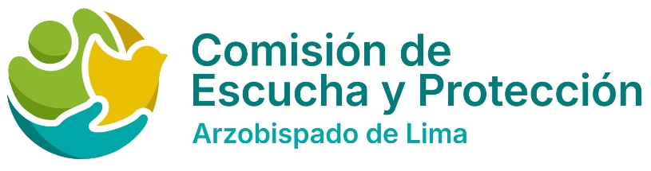

CP
Carlos Piccone
[Cargo en la Comisión]
[Breve reseña profesional]

Servicio gratuito, seguro y confidencial
Somos un servicio gratuito, seguro y estrictamente confidencial de la Arquidiócesis de Lima. Nuestra misión es acoger, escuchar y acompañar a niños, niñas, adolescentes y adultos en situación de vulnerabilidad que hayan sufrido o deseen informar situaciones de abuso sexual en el entorno eclesial.
Actuamos con trato digno, calidez y sin revictimización, activando medidas inmediatas de cuidado, protección y derivación ante las autoridades correspondientes. Formamos parte del compromiso institucional de la Iglesia para promover una cultura del cuidado, basada en la transparencia, el buen trato y la justicia.
[Cargo en la Comisión]
[Breve reseña profesional]
[Cargo en la Comisión]
[Breve reseña profesional]
[Cargo en la Comisión]
[Breve reseña profesional]
[Cargo en la Comisión]
[Breve reseña profesional]
Escuchar a las víctimas y acompañarlas debe hallar una expresión concreta en cada institución y comunidad eclesial
— Papa León XIV
Te guiamos paso a paso desde el primer contacto, garantizando un trato cálido, confidencial y sin revictimización en cada etapa del proceso.
Te explicamos cómo te podemos ayudar y evaluamos si tu caso corresponde a nuestra atención. Si aplica, programamos tu sesión de escucha.
Profesionales especializados escucharán tu testimonio en un espacio reservado, con contención emocional y la máxima calidez.
Nuestro equipo profesional analiza con el máximo rigor la información recopilada.
Brindamos apoyo según lo que necesites y solicites libremente: apoyo psicológico y acompañamiento espiritual.
Damos seguimiento a tu bienestar y a la efectividad de la ayuda brindada.
El abuso sexual es cualquier acto de naturaleza sexual no deseado hacia un niño, niña, adolescente o adulto en situación de vulnerabilidad en el entorno eclesial o comunitario, que abarca desde tocamientos y mensajes inapropiados hasta relaciones sexuales o exhibicionismo. No exige violencia física, pues suele cometerse mediante engaños, manipulación o abuso de poder. Es un delito grave sancionado por la ley civil y canónica para proteger la dignidad y los derechos de las personas.
De acuerdo con la Conferencia Episcopal Peruana (2022):
Actos que atentan contra la libertad sexual mediante violencia o intimidación. Se configura como violación al existir acceso carnal (vaginal, anal o bucal) o penetración de objetos o miembros corporales.
Actos contra la indemnidad o libertad sexual sin violencia física o intimidación, ni consentimiento válido, aprovechándose de una posición de autoridad o superioridad para coaccionar a la víctima.
Inducción a participar o presenciar conductas sexuales sin contacto físico directo. Incluye comunicaciones o propuestas por internet, teléfono u otra tecnología de la información, y la obtención o exhibición engañosa de material pornográfico.
Solicitud habitual o continuada de favores sexuales dentro de una relación pastoral o docente, creando un entorno intimidatorio, hostil o humillante.
Ejecución o imposición de actos de exhibición obscena (exhibicionismo) ante un menor o persona vulnerable.
Inducir, promover, facilitar o lucrar con la prostitución u otra forma de explotación de un menor o persona en condición de vulnerabilidad.
Captación, producción, tenencia, comercialización, difusión o exhibición por cualquier medio de material pornográfico que involucra a menores o personas en condición de vulnerabilidad.
La prevención es un compromiso de toda la comunidad eclesial. Construir entornos seguros requiere acciones sencillas pero fundamentales en nuestro día a día:
Ayuda a que niños, niñas y adolescentes aprendan a protegerse y a reconocer cuando algo no está bien.
Enséñales que son dueños de su cuerpo y que tienen derecho a poner límites si algo les hace sentir incómodos o vulnerables.
Explícales que ningún secreto que les haga sentir mal o con miedo debe guardarse, y que siempre pueden contárselo a un adulto de confianza.
Habla con ellos de forma clara sobre el respeto, la afectividad y los límites en sus relaciones con los demás.
La mejor protección es asegurar que nadie se sienta aislado o con temor a hablar.
Crea un ambiente familiar y comunitario de comunicación abierta donde las personas sientan seguridad emocional para expresar lo que les preocupa.
Mantén redes de apoyo cercanas y presta atención a las necesidades afectivas de las personas en situación de vulnerabilidad.
Enseña a los más jóvenes que pedir ayuda es un acto de valentía y que siempre habrá alguien dispuesto a escucharlos.
Para prevenir, también debemos transformar la forma en que nos organizamos y cuidamos en la comunidad.
Rompe la normalización de conductas abusivas y promueve un trato basado en el respeto y la igualdad.
Garantiza que los lugares de convivencia y las actividades cuenten con normas claras, límites visibles y personal idóneo.
Promueve los canales de atención de la Comisión de Escucha y Protección para orientar o recibir cualquier alerta o denuncia, priorizando siempre el bienestar y protección integral de las personas.
Hablar es el primer paso para protegerte a ti y a otros. En la Comisión de Escucha y Protección encontrarás un espacio seguro donde tu voz es escuchada y acompañada.